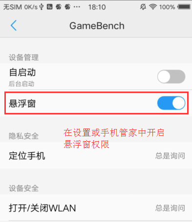

FPS测试工具篇(GameBench)
FPS是什么？
FPS是指画面每秒传输帧数，FPS是测量用于保存、显示动态视频的信息数量。每秒钟帧数愈多，所显示的动作就会愈流畅。通常，要避免动作不流畅的最低是30。在游戏过程中一般人不觉得卡顿的FPS频率大约是30Hz，想要达到流畅等级则需要60Hz。以下是腾讯We Test给出的游戏FPS参考值：
1)平均FPS(帧)
低端机：>18帧
中高端机：>25帧
2)比率
低端机：FPS高于18帧比率>90%
中高端机：FPS高于25帧比率>90%
FPS测试工具有哪些？
GameBench:最初是以安装到Android手机上的apk以及桌面版的jar文件互相辅助来使用的，如今GameBench推出了单独的PC版本，只需要连接手机而无需在手机上安装应用即可使用。手机不需要root，免费试用时间30分钟，报告可同步上传到云端。可在网页上查看报告
（备注：由于PC版的安装包地址需要翻墙才能下载，目前还未尝试过PC版）
腾讯的We Test助手：在手机上安装We Test助手(http://wetest.qq.com/cloud/help/effective)进行测试，但前提条件手机需要root，同时也需要开启悬浮窗权限
如何使用gamebench
GameBench 安装&配置
-
下载&安装 GameBench
- 直接下载apk安装 ：
- 360手机助手下载
- Google Play 下载
-
设置 GameBench
- 打开gamebench的悬浮窗权限
 - 打开查看使用情况权限
- 打开gamebench的悬浮窗权限
-
注册GameBench账号
访问gamebench官网(http://get.gamebench.net/)注册账号或手机端APP上注册
-
安装jdk1.8版本
-
下载 GameBench-Installer
- GameBench-Installer_v4.1.exe下载地址：
- Jar版本的laucher
如何使用gamebench测试FPS？
- 手机连接电脑，确保手机已经开启usb调试，使用
adb devices查看adb连接是否正常 -
电脑上双击运行 GameBench-Installer_v4.1.exe，等待程序启动手机上的GameBench服务直至提示成功
-
在手机启动Gamebench App，使用之前注册的账号登录
-
主屏幕添加要测试的游戏，并开始进行测试
- 查看测试结果数据